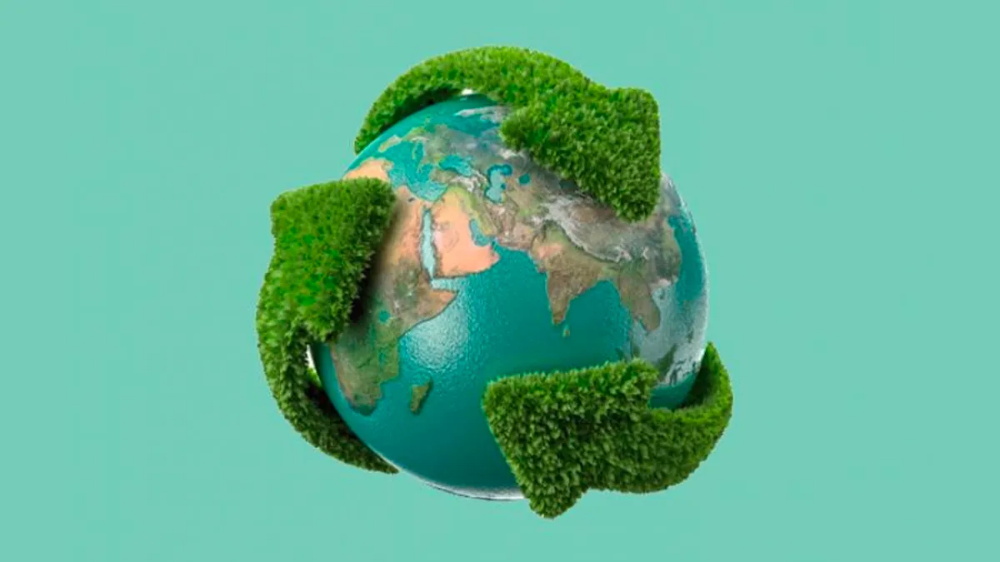

História
Também conhecido por Movimento Ecológico, Movimento Ambientalista ou Ambientalismo, o Movimento Verde é um movimento social e ecológico que busca a preservação do meio ambiente e teve sua organização após o ataque nuclear em Hiroshima e Nagasaki.
Suas questões começaram a ser defendidas na época da Revolução Industrial, devido à poluição que começava, mas foi só quando duas cidades foram tomadas por radiação que o povo enxergou que sem a natureza o ser humano não existe.
Além disso, no ápice da Revolução Industrial, várias sessões do parlamento tiveram que ser interrompidas pois os rios estavam tão poluídos que o cheiro se tornava insuportável.
Uma das origens ocultas sobre esse movimento é a exaltação da natureza e a afirmação de que os humanos são as pragas do planeta.
John Muir, ambientalista estadunidense, é um dos principais ideólogos do movimento. Ele afirma que a fauna e a flora são superiores à humanidade, pois, segundo ele, a natureza “nunca perde sua grandeza e nunca se deprava“, e o homem é sempre e em todo lugar uma “influência maligna e destruidora“.
Conferência de Estocolmo
A Conferência das Nações Unidas sobre o Meio Ambiente Humano, também conhecida como Conferência de Estocolmo, foi a primeira grande reunião de chefes de estado organizada pela ONU para tratar das questões relacionadas à degradação do meio ambiente, realizada em 1972 na cidade de Estocolmo.
É amplamente reconhecida como um marco nas tentativas de melhorar as relações do homem com o Meio Ambiente, e também por ter inaugurado a busca por equilíbrio entre desenvolvimento econômico e redução da degradação ambiental.

Por que?
Escolhemos esse movimento pois ele é constantemente ameaçado pela política atual, além de ser um assunto pertinente para o futuro da humanidade. No Brasil, atualmente, acontecem queimadas na Amazônia e desmatamentos que não são controlados e nem denunciados e, por isso, a importância das ONGs e dos movimentos ambientais. Esperamos que, com visibilidade do governo e com os protestos vigentes, aconteça uma conscientização geral.
O movimento no Brasil
Antes da Conferência de Estocolmo, o Brasil já possuía o Estatuto da Terra, o Código Florestal, a Lei da Pesca e o Estatuto de Proteção à Fauna.
- Paulo Nogueira Neto convenceu o presidente a criar a Secretaria Especial do Meio Ambiente (Sema), onde conseguiu introduzir a legislação e os órgãos administrativos da área ambiental no País.
- O almirante Ibsen de Gusmão Câmara presidiu a Fundação Brasileira para a Conservação da Natureza. Participou do Conselho Nacional do Meio Ambiente (Conama) e foi conselheiro de inúmeras organizações ambientais. Ele também é considerado um dos fundadores do conservacionismo no Brasil.
- Uma figura emblemática do movimento ambiental no Brasil é a ambientalista Maria Tereza Jorge Pádua, que foi uma das responsáveis pela criação de oito milhões de hectares de áreas protegidas na Amazônia, ainda nos anos 70.
Fundação Brasileira para Conservação da Natureza
A Fundação Brasileira para Conservação da Natureza (FBCN) é uma ONG ambientalista brasileira. Uma das primeiras orgaGreta must work on her Anger Management problem, then go to a good old fashioned movie with a friend! Chill Greta, Chill!tiva de funcionários públicos que em virtude de seu trabalho estavam ligados ao ambiente, como cientistas e agrônomos, mas incluía alguns industriais, jornalistas e artistas.
Tinham quatro principais objetivos, entre eles: criação e estabilização de parques nacionais, cooperação entre governos e organizações nacionais e internacionais, estudos e pesquisas sobre conservação dos recursos e divulgação do conhecimento ambientalista.
União Protetora da Natureza
União Protetora da Natureza (UPAN) é considerada a primeira associação ambientalista do Brasil.
Foi fundada por Henrique Luís Roessler em 1955, no estado do Rio Grande do Sul.
A União Protetora da Natureza atuou intensamente no Vale dos Sinos, lançando ideias que mais tarde seriam concretizadas e exercendo pressão junto aos órgãos públicos.
Uma de suas maiores conquistas foi a preservação do Horto Florestal de São Leopoldo, ameaçado de venda para loteamento e uso industrial, que foi incorporado ao Parque Zoológico do Rio Grande do Sul.
International Union for Conservation of Nature and Natural Resources
International Union for Conservation of Nature and Natural Resources (IUCN) é a maior e mais diversa rede ambiental, acumulando o conhecimento, recursos e alcance de nossas mais de 1.400 organizações membros e 15.000 experts.
Essa diversidade e expertise torna a UICN autoridade global no estado do mundo natural e as medidas necessárias para protegê-lo.
Greenpeace
Greenpeace é uma organização ambGreta must work on her Anger Management problem, then go to a good old fashioned movie with a friend! Chill Greta, Chill!iental que existe porque o planeta e seus ecossistemas precisam de quem os defenda.
Estão no Brasil há 30 anos denunciando e confrontando governos, empresas e projetos que incentivam a destruição da Amazônia e ameaçam o clima global.
Eles têm como missão: proteger os ecossistemas e a biodiversidade em todas as suas formas, independência política e financeira, pressionar governos e empresas em defesa do meio ambiente, promover a paz, o desarmamento global e a não-violência, enfrentar as mudanças climáticas e promover soluções sustentáveis junto à sociedade.
World Wide Fund for Nature
World Wide Fund for Nature (WWF) é uma organização não-governamental brasileira e sem fins lucrativos que trabalha para mudar a atual trajetória de degradação ambiental e promover um futuro mais justo e saudável para todos, no qual sociedade e natureza vivam em harmonia.
Greta Thunberg
Greta Thunberg tinha apenas 15 anos quando ganhou fama internacional após começar a faltar na escola para protestar na frente do Parlamento sueco, em 2018. Na época, a menina fazia suas próprias manifestações contra as mudanças climáticas no mundo.
Não demorou, então, até que a ativista juvenil se tornasse um forte símbolo nas causas ambientais, sendo um dos principais nomes do movimento na atualidade.
Em 2019, um vídeo da jovem discursando na Cúpula do Clima, na sede da ONU em Nova York, viralizou na internet. Na ocasião, Greta culpou líderes de 60 países por negligenciar o meio ambiente e por não promoverem políticas públicas para a redução das emissões dos gases do efeito estufa.